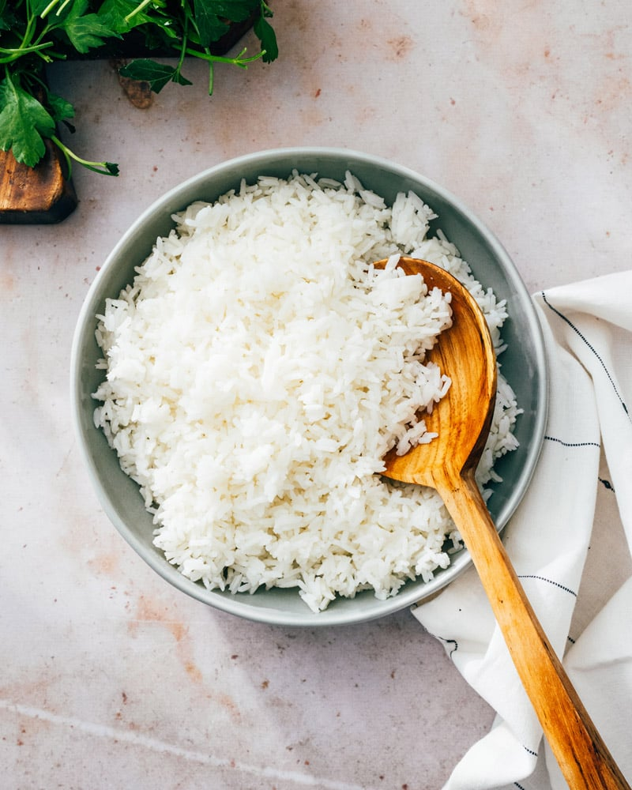

What is it?
Rice grains that have been brought to a boil and left to absorb water until it expands and turns fluffy.
Rice is a staple food of many dishes and while good on its own, is used as a complement to other forms of
meats and vegetables.
Ingredients and equipment
- Jasmine rice, 250g.
- Water, 750mL.
- Rice cooker or stovetop.
Recipe - Using a rice cooker
- Wash rice in a pot with water until water is only slightly cloudy.
- To the rice cooker, add rice and water. Ideally, the level of water should
be at least an inch above the level of the rice.
- Set rice cooker to desired setting and wait the specified time.
- Rice can be used in other dishes containing meats and vegetables or served as
is with soy sauce.
Recipe - Using a pot
- Wash rice a pot with water until water is only slightly cloudy.
- To a pot, add rice and water. The level of the water should be at least an inch above
the level of the rice.
- Turn on the heat and bring the water to a boil.
- Once the water starts to bubble frequently, i.e. bubbles start popping audibly,
immediately turn off the heat and cover the pot with a lid.
- Let sit for 10 minutes or until the excess water is absorbed by the rice.
- Break up the rice using a fork.
Click here to return to home page.